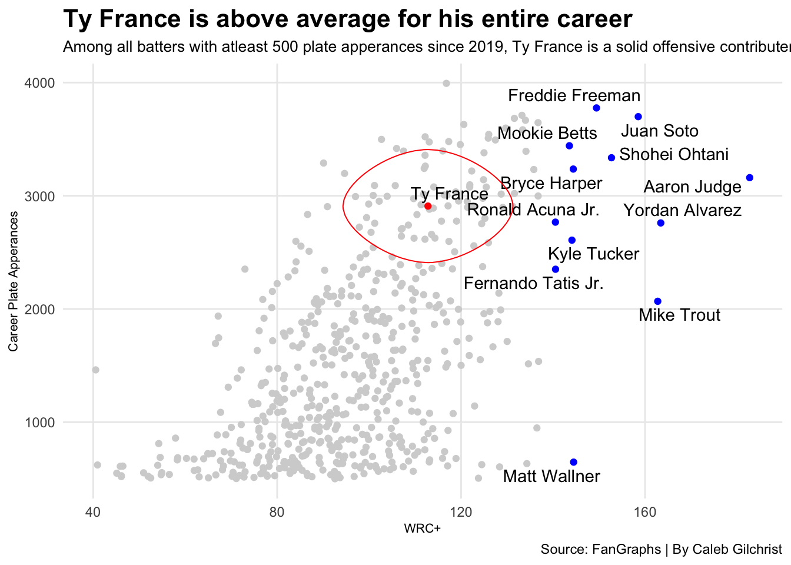
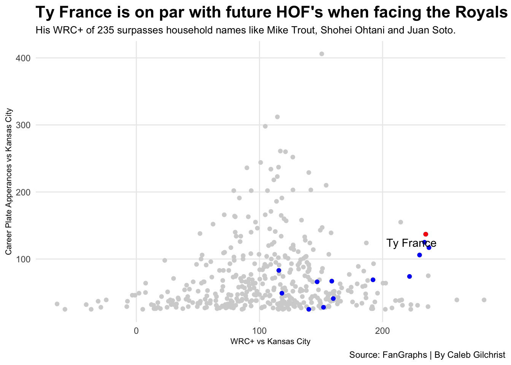
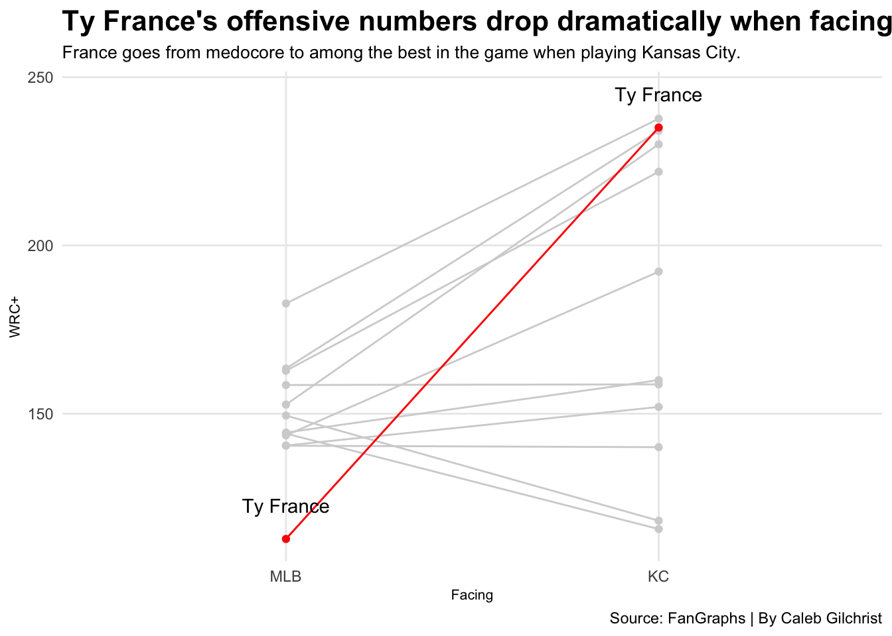
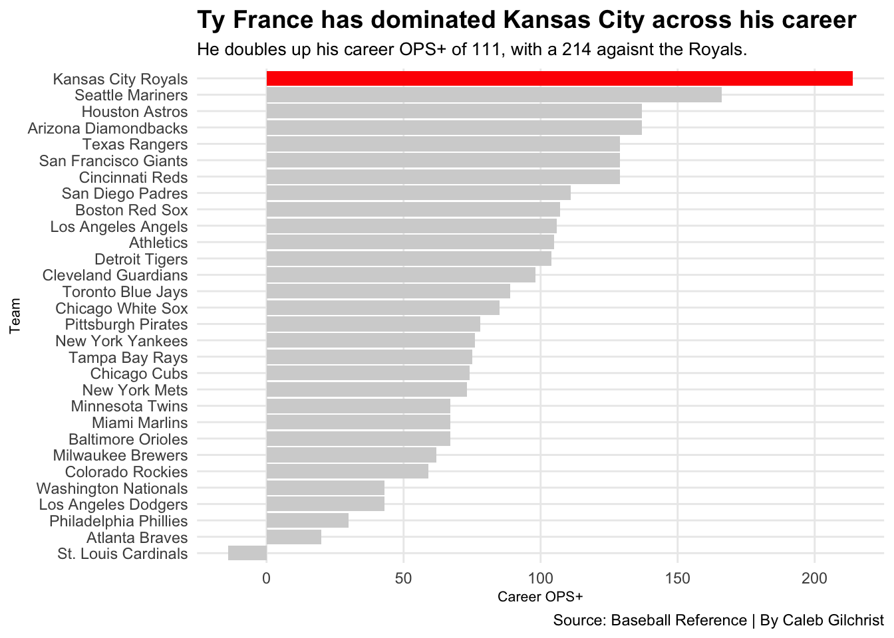

Ty France is a Hall of Famer…but only agaisnt the Royals.
baseball
twins
royals
mlb
Author
Caleb Gilchrist
Published
May 4, 2025
Ty France is an above average baseball player.
After playing 7 seasons he’s amassed a career WAR of 8.5, which is…nothing special. He’s played for three different teams and recently got traded to the Minnesota Twins before the 2025 season where he’s taken up the of a solid veteran contributor.
However, when he plays the Kansas City Royals, Ty France turns into one of the greatest baseball players of our time. It’s not some small uptick in offensive stats, but instead some of the most eye-popping discrepancies you’ll ever see in baseball.
Our subject made his debut in 2019 so let’s start there. Below is every batter with more than 500 plate appearances since 2019, sorted by Weighted Runs Created Plus, also known as WRC+, which measures a player’s ability to create runs. What makes it special is that it’s weighted depending on ballpark and the year. The short and sweet is that WRC+ is a great way to measure how good a player is at hitting the ball.
Code
ggplot() +geom_point(data=batters, aes(x=`wRC+`, y=PA), color="lightgrey") +geom_point(data=tyfrance, aes(x=`wRC+`, y=PA), color="red") +geom_point(data=best_batters, aes(x=`wRC+`, y=PA), color="blue") +geom_text_repel(data=tyfrance, aes(x=`wRC+`, y=PA, label=Name)) +geom_text_repel(data=best_batters, aes(x=`wRC+`, y=PA, label=Name)) +geom_encircle(data=tyfrance, aes(x=`wRC+`, y=PA), s_shape=.03, expand=.03, colour="red") +labs(title="Ty France is above average for his entire career", subtitle="Among all batters with atleast 500 plate apperances since 2019, Ty France is a solid offensive contributer.", caption ="Source: FanGraphs | By Caleb Gilchrist", x="WRC+", y="Career Plate Apperances") +theme_minimal() +theme(plot.title =element_text(size =16, face ="bold"),axis.title =element_text(size =8), plot.subtitle =element_text(size=10), panel.grid.minor =element_blank() )

The league average is always 100 and France’s career WRC+ is 112. This means that through out his entire career, France is 12% better than the average MLB player. That’s not bad. But he’s a long ways off some from of those names in the top right. It’s not a surprise that Mike Trout, Aaron Judge, Shohei Ohtani, Juan Soto and others top the chart. They’re the best players for a reason. Going forward these will be our “future Hall of Famers” that we’ll use as comparison.
However, Matt Wallner sticks out like a sore thumb. He’s been pretty good on offense, but doesn’t have a very large sample size so we’re going to ignore him going forward.
So, no surprise there. The best offensive players are good at hitting the ball and Ty France is floating in a mass of above-average baseball. But what happens if we take those career numbers and filter them down to when those players are playing Kansas City?
Code
ggplot() +geom_point(data=batters_vs_kc, aes(x=`wRC+`, y=PA), color="lightgrey") +geom_point(data=best_batters_vs_kc, aes(x=`wRC+`, y=PA), color="blue") +geom_point(data=tyfrance_vs_kc, aes(x=`wRC+`, y=PA), color="red") +geom_text_repel(data=tyfrance_vs_kc, aes(x=`wRC+`, y=PA, label=Name)) +labs(title="Ty France is on par with future HOF's when facing the Royals", subtitle="His WRC+ of 235 surpasses household names like Mike Trout, Shohei Ohtani and Juan Soto.", caption ="Source: FanGraphs | By Caleb Gilchrist", x="WRC+ vs Kansas City", y="Career Plate Apperances vs Kansas City") +theme_minimal() +theme(plot.title =element_text(size =16, face ="bold"),axis.title =element_text(size =8), plot.subtitle =element_text(size=10), panel.grid.minor =element_blank() )

Wow. Ty France instantly rockets himself to the top end. Remember when I said that Ty France’s career WRC+ is 112, therefore he’s 12% better than the average player? His career WRC+ against Kansas City is 235. That’s more than double the average player and puts him above or close to our other house hold names we highlighted earlier.
Here’s a different way to visualize it.
Code
ggplot() +geom_line(data=slopechart_batters, aes(x=Facing, y=`wRC+`, group=Name), color="lightgrey") +geom_point(data=slopechart_batters, aes(x=Facing, y=`wRC+`, group=Name), color="lightgrey") +geom_line(data=slopechart_tyfrance, aes(x=Facing, y=`wRC+`, group=Name), color="red") +geom_point(data=slopechart_tyfrance, aes(x=Facing, y=`wRC+`, group=Name), color="red") +geom_text(data=slopechart_tyfrance, aes(x=Facing, y=`wRC+`, group=Name, label=Name), nudge_y =10) +theme_minimal() +labs(y ="WRC+",title ="Ty France's offensive numbers drop dramatically when facing other teams",subtitle ="France goes from medocore to among the best in the game when playing Kansas City.",caption ="Source: FanGraphs | By Caleb Gilchrist" ) +theme(plot.title =element_text(size =16, face ="bold"),plot.subtitle =element_text(size =10),axis.title =element_text(size =8),panel.grid.minor =element_blank() )

On one side of the chart is a player’s career WRC+ vs Kansas City, the other side is their career WRC+ against the entire league. Most players stay pretty close to their career numbers, maybe with a little drop or boost in production. But none of the other players have as steep of an incline as Ty France does.
Finally, here’s how Ty France has batted against every other team in the league. We’re using On-base Plus Slugging, or OPS+ for this chart and keep in mind, the league average is always 100.
Code
tyfrance_vs_mlb_highlight <- tyfrance_vs_mlb |>filter(Split =="Kansas City Royals")#| warning: false#| message: falseggplot() +geom_bar(data = tyfrance_vs_mlb, aes(x =reorder(Split, tOPS_plus), weight = tOPS_plus), fill ="lightgrey") +geom_bar(data = tyfrance_vs_mlb_highlight, aes(x =reorder(Split, tOPS_plus), weight = tOPS_plus), fill="red")+coord_flip() +labs(title ="Ty France has dominated Kansas City across his career",subtitle ="He doubles up his career OPS+ of 111, with a 214 agaisnt the Royals.",caption ="Source: Baseball Reference | By Caleb Gilchrist",x ="Team",y ="Career OPS+" ) +theme_minimal() +theme(plot.title =element_text(size =14, face ="bold"),plot.subtitle =element_text(size =10),axis.title =element_text(size =8),panel.grid.minor =element_blank() )

That’s pretty insane. For the vast majority of teams, Ty France has batted worse than the league average. But when ever he faces the Royal Blue and Gold, his offensive production is more than double the average batter.
Earlier in April, Ty France earned American League Player of the Week honors after facing Kansas City and batting .400 with 2 home runs and no strikeouts. The most recent time he won AL Player of the Week was against, you guessed it, the Royals.
Now the greatest question: why?
When the MLB Networked asked him what made Kansas City special, Ty France really didn’t know.
“…I guess I just see the ball well there and play well against them. So we need to play them more often.”
Dear Ty France: I have good news. You now play for the Minnesota Twins, divisional rivals of the Royal and you’ll get to see them 9 more times this season. Have fun.